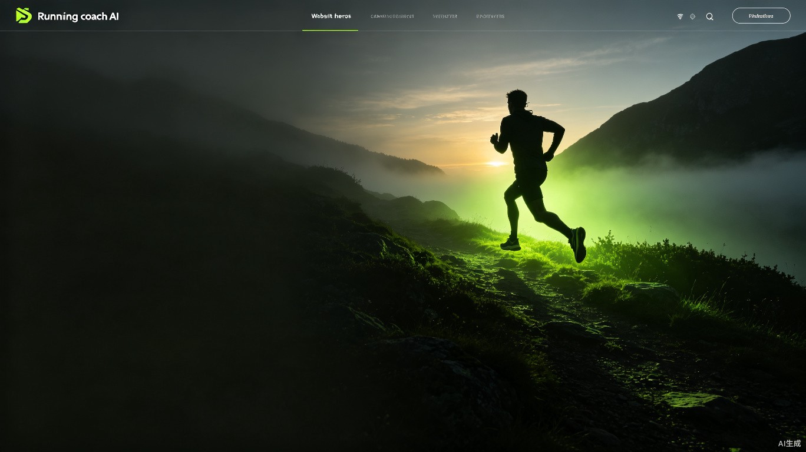

林
林深

晨光 · Z2 恢复跑
设计原则
克制即专业
日出 / 月光双主题
主色仅用于 CTA、选中态、关键数据强调；同屏占比 ≤8%，克制即专业
明暗双模
深色为主调，浅色为户外强光备份；token 物理隔离，切换零漏色
时段氛围层
晨/午/黄昏/夜 4 档 ambient 渐变，日间暖光 / 夜间冷光
数据驱动克制
高密度分析但保留呼吸感；图表随主题切换暖/冷色阶 + 语义状态色，不堆砌
时段氛围
光随时间流转
点击下方卡片预览页面氛围层效果（仅预览，不影响全局设置）
功能页面
5 个工作台
开始你的第一次数据分析
教练已就绪，上传 GPX/TCX/FIT/CSV 即可生成个性化建议